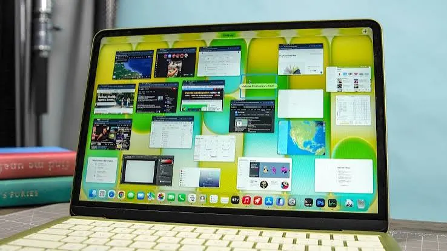

Laptops
How Much RAM Do You Really Need in a Laptop?
Understand laptop RAM requirements for everyday use, students, office work, programming, creative applications and gaming, plus upgrade considerations.
Introduction
One of the most important specs to consider when purchasing a new laptop is the amount of RAM it contains. Too much however isn’t always a good thing, and instead the amount of RAM should depend on what operating system you are using, the specific applications you are using, the demands of the applications, and how long you expect to have the laptop for.
If you have too little RAM your laptop may get slower when trying to use multiple applications. However, if you have too much RAM for the demands of your tasks then you aren’t likely to notice any great change. This guide will help you understand what RAM is, what the most common amounts are and how to pick the right amount

What is RAM and why does it matter?
RAM stands for Random Access Memory. This is the temporary memory used by your operating system and applications. When you open a browser, edit a document or have a video call, your RAM will store information so that is can be accessed quickly whilst being used.
RAM is different to storage. Whilst your SSD or Hard Drive will store your files and applications even when your laptop is turned off, RAM will only store information whilst in use. Therefore, if you have a fast SSD you can’t fully compensate for not having enough RAM.
If you run out of RAM, your operating system may move information between your RAM and storage so that you can still carry out your tasks. This however will generally be slower than having everything stored in RAM. You may notice that your applications are slower to switch between, your browser tabs take longer to load or you experience lag when multi-tasking.

Is 8GB enough?
8GB can be enough for light tasks such as basic browsing, emails, document editing and video playback. This can be a good option if you are looking for a budget laptop and only using it for basic tasks at school or around the house.
However, modern browsers and applications can require quite a lot of RAM. If you have multiple tabs open, video calls, office applications and background services running then you may not have much RAM left. Some operating systems and specific applications will also require more RAM meaning 8GB can feel limiting if you’re multi-tasking or planning to have the laptop for a few years.
If you are looking at 8GB ensure it can be upgraded. If the RAM is soldered then you need to think carefully about whether this will be a good option for your increasing demands.
16GB – A good amount for many
Having 16GB can be a good amount for many general purpose laptops. This will give you more space to have lots of browser tabs, office applications, online meetings, research tools and multi-tasking. Students, admin staff and many home users may find this a good balance between price and capability.
For programming, 16GB can be a good amount for many development environments. This will depend on the language you’re using, the size of your project, containers and virtual machines. For business users wanting to run larger spreadsheets or multiple applications 16GB can be a good amount.
However it is important to remember that RAM is just one part of your performance. If your laptop has a low performing processor, poor cooling or a failing storage device then having 16GB may still feel slow.
32GB or more?
32GB can be a good amount if you are going to be doing high demanding tasks. This could be photo/video editing, 3D modelling, large design projects, software development with multiple virtual machines/containers, data analysis or complex engineering applications. The correct amount will depend on what specific applications you’ll be using and the size of the files.
Some users may require 64GB or more. This is generally due to specific tasks rather than general browsing and document editing. Check what is recommended by your software vendor and look at what the RAM usage is like for your typical project. If you are regularly using most of your RAM then going for a larger amount could make things feel more comfortable.
Don’t go for a high amount of RAM just because it sounds future proof. Consider how much extra it is costing and what you’ll actually be using the laptop for. If it can be upgraded then consider how much it costs to upgrade now versus later.
Student and Office Users
If you are a student using your laptop mainly for learning platforms, browsers, word processing, presentations and video calls then 8GB may be enough for light use. However 16GB will give you more flexibility for multi-tasking and if you plan on having the laptop for longer. If you’re using engineering, design, programming or media applications then follow what is required for your course. You may require more.
Many office workers will be using their laptop for emails, spreadsheets, documents, communication tools and web applications. 16GB would be a good target for many standard roles. If you are working with large data sets, complex financial models or specific applications then check what is recommended for the application.
Laptops in a shared/business environment can be beneficial to have standardised RAM. However if you have specific roles then you may require a different amount.
Gaming and Creative
The amount of RAM you’ll require will depend on what games you are playing, the resolution, background applications and your system. Many modern games will run fine with 16GB. However some users may prefer 32GB for newer games, multi-tasking, streaming or extra software whilst gaming. Having a dedicated graphics card with it’s own video memory will not impact your system RAM.
For creative tasks this will depend on what you are doing. 16GB can be perfect for simple image editing. However if you are working with large layered files, high resolution photography, video editing or 3D applications then 32GB or more can be beneficial. This will depend on your video resolution, codec, project complexity and how many applications you’re opening.
Check what is recommended for the applications/games you are using. Independent reviews can help you see if the RAM, processor or graphics is the main issue.
Can you upgrade RAM?
Some laptops will have upgradeable RAM whilst others will have soldered RAM. Some laptops will have soldered RAM and one upgrade slot.
Look up your exact model number and check the service documentation. Don’t assume that two laptops from the same family will have the same RAM. Check what type, speed, slots and maximum RAM are supported. If your laptop is still under warranty then check what the manufacturer recommends for upgrading. Use an authorised service provider if needed.
If your RAM can’t be upgraded then choose a suitable amount. If it can be upgraded then consider how much it will cost to upgrade now versus later. Ensure you upgrade to a compatible amount.
How to check current RAM usage.
In Windows you can check your RAM usage by opening Task Manager and looking at the performance tab. In macOS you can check your RAM usage in Activity Monitor. These may vary depending on your operating system version.
Make sure you check whilst carrying out your normal tasks. Open up your usual applications and files. If your RAM is constantly full then this could be an issue. If you are constantly reloading applications, struggling to switch between them or using a lot of swap then this could be an issue. Just because you have a high reading doesn’t necessarily mean you need more RAM. Your operating system will use any free RAM for caching.
If your laptop is running slowly then check your CPU, storage and temperature. High RAM usage may just be due to a demanding application.
Other Specs
Your RAM should be considered along with your processor, storage and cooling. A modern processor will handle instructions efficiently but the performance will depend on how powerful your laptop is and how well it is cooled. An SSD will improve start-up and file access. A suitable graphics processor will also be important.
The operating system and applications you are using will also have an impact. If you are only using a few browser tabs then you won’t require as much RAM as if you’re using a development environment, virtual machine and large database. Battery life, screen quality and upgradeability will also impact your decision when purchasing.
When comparing two models check the full spec and look for reviews for the exact model. A balanced laptop will generally be more useful than one with a high amount of RAM but poor performance.
Conclusion
8GB may be enough for light browsing and basic documents but can be limiting if you’re multi-tasking. 16GB will be a good amount for many students, home users and office professionals. 32GB or more can be a good option if you’re doing high demanding creative, technical and specific tasks.
Check what the software requires, look at the RAM usage and ensure it can be upgraded. Choose an amount that will suit what you’re currently doing and how long you expect to have the laptop for. Balance your RAM with your processor.essor, SSD, cooling and budget.
Need a hand with your printer or laptop?
Printerworld sells printers, laptops and genuine supplies, and repairs and services both. Bring in your model number and we will help you get it right.